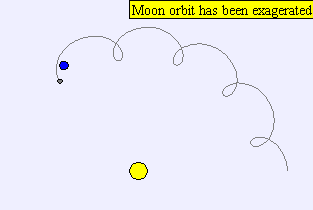

Earth, Sun, and Moon
A particular case of the three-body problem, this is a simulation
of three bodies interacting according to the universal gravitational law.

We have taken the unscaled data for the Sun, the Earth and
the Moon in order to make it more attractive. However, from the
point of view of the numerics, it is preferable to rescale so that
variables take values near one.
The difficult part is to set up initial conditions so that the Moon is
captured by the Earth in its translation orbit around the Sun. In the
initialization page, we approximate the real initial position for the
Sun, the Earth and the Moon, which produces the situation we are
familiar with.
Activities
-
As an exercise for your students, delete the initialization page (the
one with the real situation of the Sun, Earth and Moon) and ask your
students to try to reproduce it!
-
Another interesting activity is to pause the simulation, drag the Sun
to a different position and play the simulation again to see how this
causes the Moon to scape the trajectory.
-
Now that we dragged a body, why not dragging any of the other ones?
(Please recall to pause the simulation before dragging any of
the bodies, otherwise the simulation may become unstable)